The Kaya Identity:
Energy Use, Conservation
and Efficiency
EES 3310/5310
Global Climate Change
Jonathan Gilligan
Class #24: Monday Oct. 15 2018
PDF: https://ees3310.jgilligan.org/Slides/Class_24/EES_3310_5310_Class_24_Slides.pdf Navigate slides: next: N or <space>; previous: P or <backspace>
Also: up, down, left, right arrows; overview: o; help: ?
Decarbonizing Global Economy
Decarbonizing Global Economy
- World needs lots more energy
- National/industrial energy poverty:
- Energy consumption for economic growth
- Household energy poverty:
- Energy consumption for quality of life
- National/industrial energy poverty:
Energy

Population Density
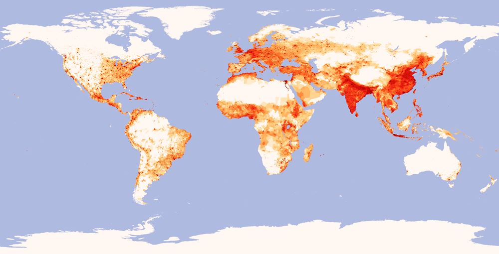
Energy Poverty
Household Energy Poverty
- Roughly 1.2 billion people do not have acccess to electricity.
- Down from 1.5 billion in 2008
- Benefits of providing even a little electricity:
- Children study 30% more with just one light bulb in home.
- Women have more say in household decisions
- Allows economically productive activity in evening
- Role of refrigeration in preventing disease
- Electricity and gas reduce exposure to indoor air pollution
- Indoor air pollution from cooking, lighting kills around 4.3 million/year
- Home solar typically provides light, but insufficient for refrigeration, cooking
Measuring Energy and Environmental Impact
Measuring Energy
- Heat:
- BTU (British Thermal Unit) = quantity of heat
- Quad = quadrillion BTU
- Kilowatt Hour (kWh): measure of electricity
- Conversions:
- 1 quad is about 300 billion kWh
- 1 quad per year is about 11 billion watts
- Typical large power plant (coal or nuclear) produces an average of around 750 million watts
- 1 quad per year is about 15 big power plants
- Magnitudes
- World uses about 600 quads per year of primary energy
- U.S. uses about 100 quads per year of primary energy
- 4% of population, 17% of energy consumption
Some Definitions:
- Primary vs. Secondary
- Primary energy consumption = heat generated
- Secondary energy consumption = useful energy consumed
- Coal generation is about 33% efficient
- Gas generation is about 45% efficient
- A car engine is about 33% efficient
- More efficient generation can produce more secondary energy with less primary energy.
- Nameplate vs. Average Power Output:
- Nameplate = power when operating at 100% capacity
- Duty factor = average fraction of maximum capacity achieved over a year
- Actual energy produced = nameplate power × duty factor × 1 year
Kaya Identity
Kaya Identity
\[\color{firebrick}{F} = \color{darkgreen}{P} \times \color{blue}{g}\times \color{mediumorchid}{e} \times \color{crimson}{f}\]
- \(\color{firebrick}{F} =\) emissions (million tonnes carbon per year)
- \(\color{darkgreen}{P} =\) population (billions)
- \(\color{blue}{g} =\) per-capita GDP ($1000 per person)
- \(\color{mediumorchid}{e} =\) energy intensity of economy (quads / trillion dollars)
- \(\color{crimson}{f} =\) carbon intensity of energy supply (million tonnes carbon / quad)
Policy
- We can’t directly control \(\color{darkgreen}{P}\)
- We want \(\color{blue}{g}\) to grow
- Therefore, decrease \(\color{mediumorchid}{e}\) and \(\color{crimson}{f}\)
Economic and Energy Trends
Interactive Tool
https://ees3310.jgilligan.org/decarbonization/
Kaya data and analysis for your own computer: https://github.com/jonathan-g/kayadata
An experimental version of the interactive tool is available at https://github.com/jonathan-g/kayatool. You can install it on your own computer, but it may be a bit iffy when you run it.
Global Population (P )
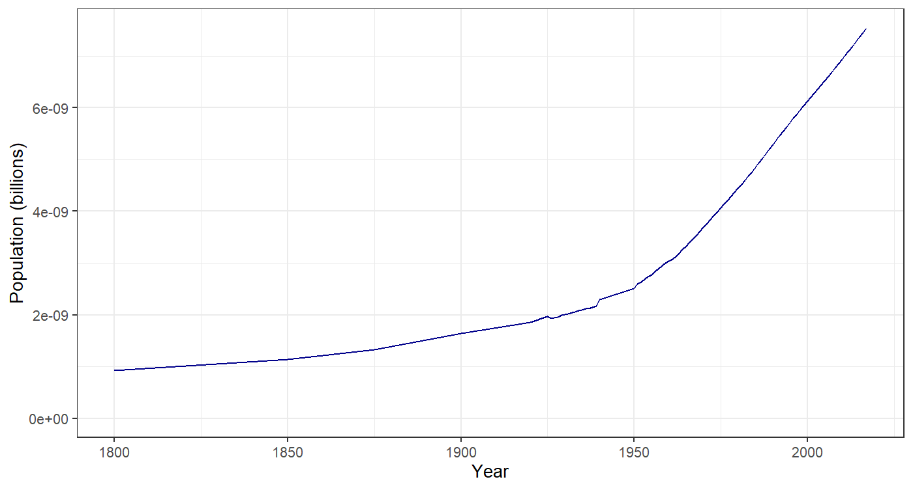
Global Economy (per-capita GDP g)
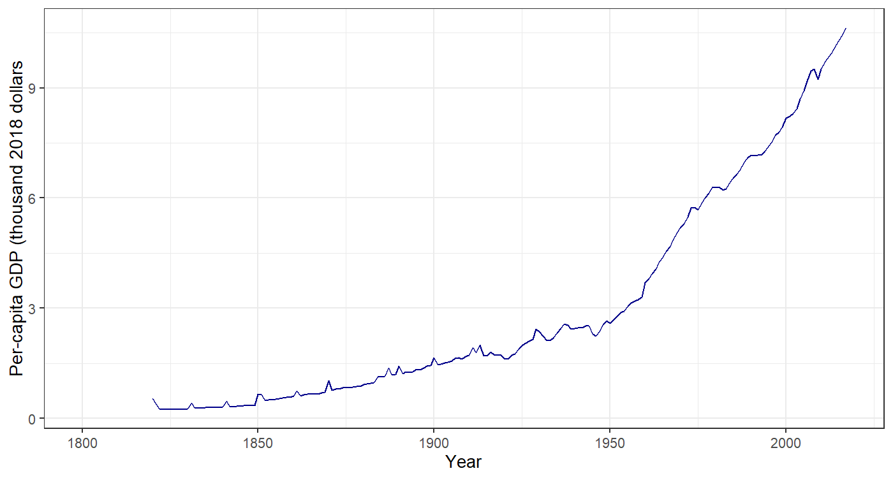
Global Income Distribution
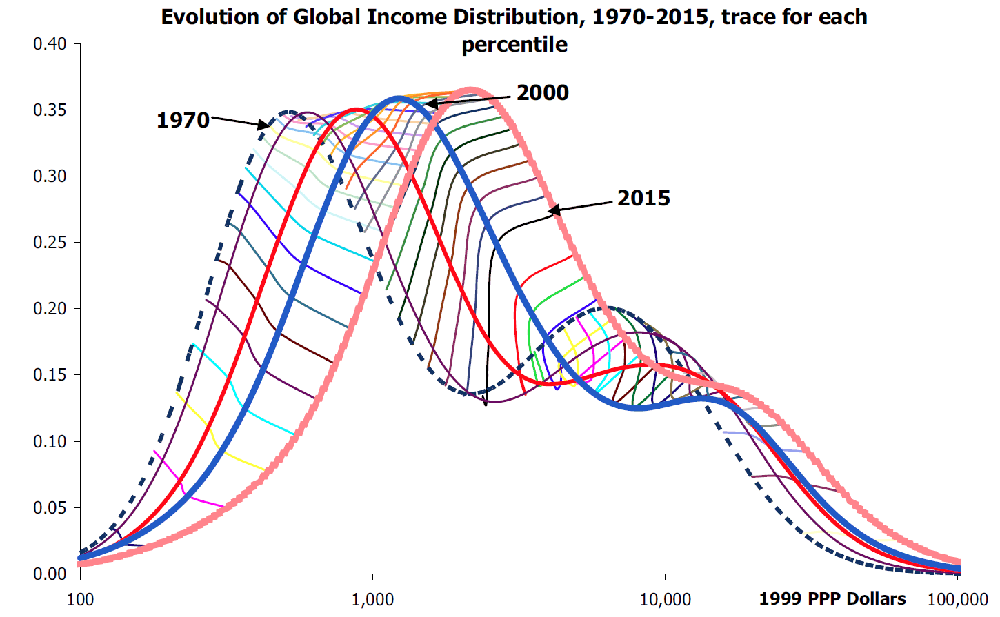
- Big drop in “desperate poverty”
- Growth of global middle-class
Global Income Distribution
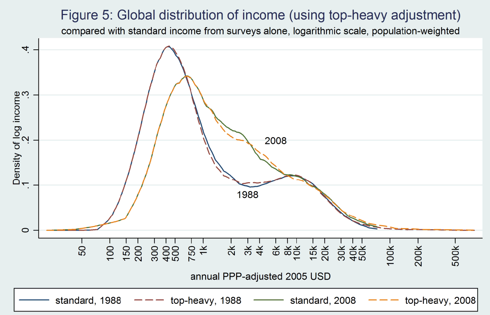
- Rightward movement of lower end: Big drop in poverty
- Growing lump in middle: Rise of global middle-class
Global Income Growth over Time
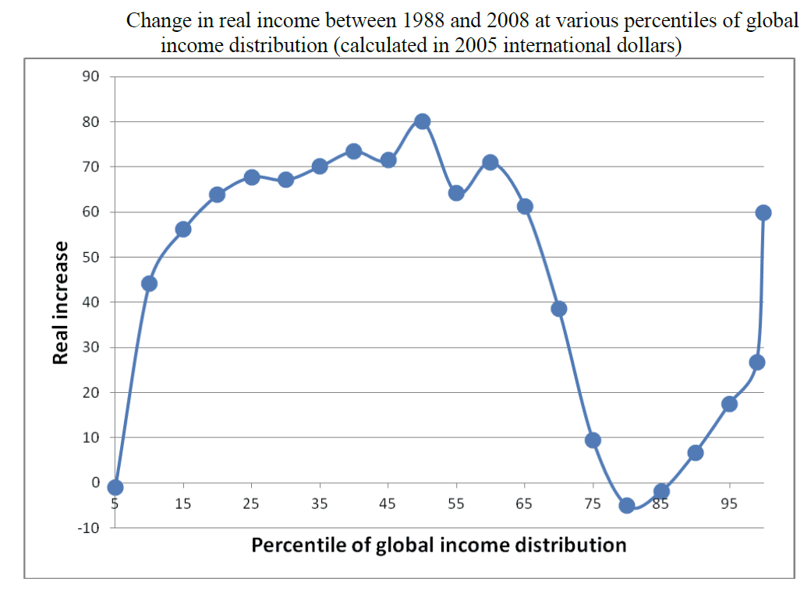
- Biggest gains for 10th–65th percentile (poor and middle class)
- Losses for 80th–85th percentile (middle class of rich nations)
- Big gains for richest 5% (> $75,000 US)
Emissions Intensity of
Global Economy (ef )
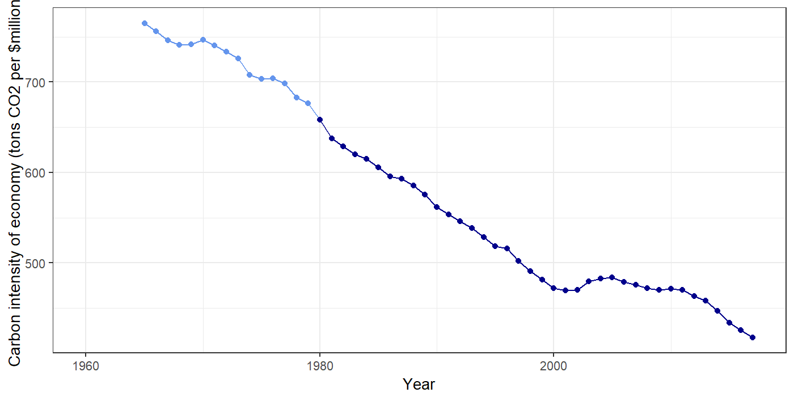
Energy Intensity of
Global Economy (e)
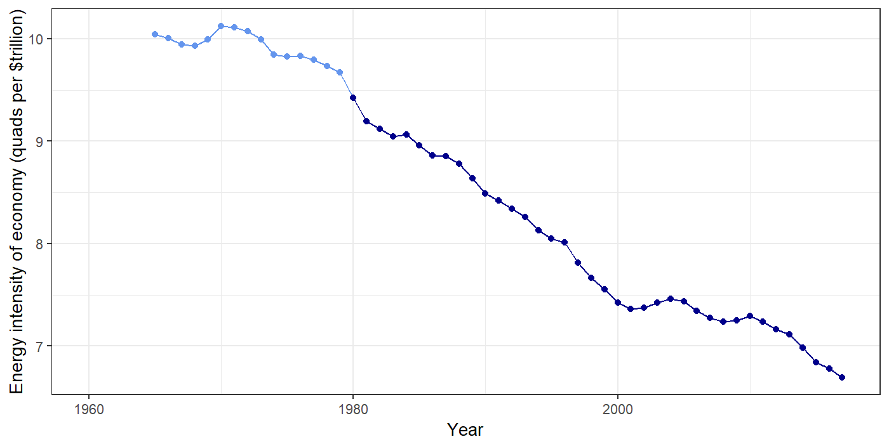
Carbon Intensity of
Global Energy Supply (f )
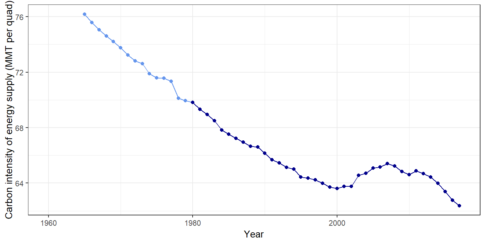
Implied Decarbonization
Implied Decarbonization
- Specify emissions for 2050, compared to 2010
- Assume global GDP grows at rate \(r\)
(5% → \(r = 0.05\))
\[\begin{aligned} \text{emissions: } {\color{firebrick}F} &= {\color{darkgreen}P} {\color{blue}g} {\color{mediumorchid}e} {\color{crimson}f} = {\color{darkcyan}\mathrm{GDP}} \times {\color{mediumorchid}e}{\color{crimson}f} \\ {\color{firebrick}F}(2050) &= {\color{darkcyan}\mathrm{GDP}}(2050) \times {\color{mediumorchid}e}{\color{crimson}f}(2050) \end{aligned} \]
Growth:
\[\begin{aligned} y(\text{5 years from now}) &= y(\text{today}) \times \exp(r \times 5) \\ &\approx y(\text{today}) \times (1 + r)^5 \end{aligned} \]
- exp = exponential function (\(e^x\)).
- Call it “exp” to avoid confusing \(\color{mediumorchid}e\) in Kaya formula with \(e\), base of natural logarithm.
Implied Decarbonization
- Specify emissions for 2050, compared to 2010
- Assume global GDP grows at rate \(r\)
(5% → \(r = 0.05\))
\[\begin{aligned} \text{emissions: } {\color{firebrick}F} &= {\color{darkgreen}P} {\color{blue}g} {\color{mediumorchid}e} {\color{crimson}f} = {\color{darkcyan}\mathrm{GDP}} \times {\color{mediumorchid}e}{\color{crimson}f} \\ {\color{firebrick}F}(2050) &= {\color{darkcyan}\mathrm{GDP}}(2050) \times {\color{mediumorchid}e}{\color{crimson}f}(2050) \\[1ex] {\color{darkcyan}\mathrm{GDP}}(2050) &= {\color{darkcyan}\mathrm{GDP}}(2010) \times \exp(r \times (2050-2010)) \\[1ex] {\color{mediumorchid}e}{\color{crimson}f}(2050) &= \frac{{\color{firebrick}F}(2050)}{{\color{darkcyan}\mathrm{GDP}}(2050)}\\ &= \frac{{\color{firebrick}F}(2050)}{{\color{darkcyan}\mathrm{GDP}}(2010) \times \exp(r \times 40)} \approx \frac{{\color{firebrick}F}(2050)}{{\color{darkcyan}\mathrm{GDP}}(2010) \times (1 + r)^{40}} \end{aligned} \]
50% reduction by 2050:
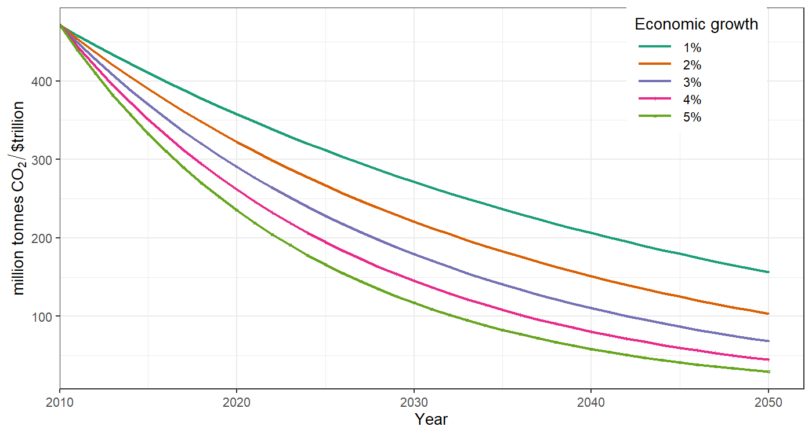
Actual and Implied Decarbonization
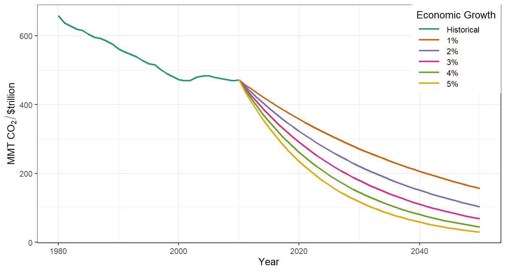
Pielke’s Policy Criteria
- Policies should flow with public opinion
- Public will not tolerate significant short-term costs, even for big long-term benefits
- Policy must center on clean energy innovation